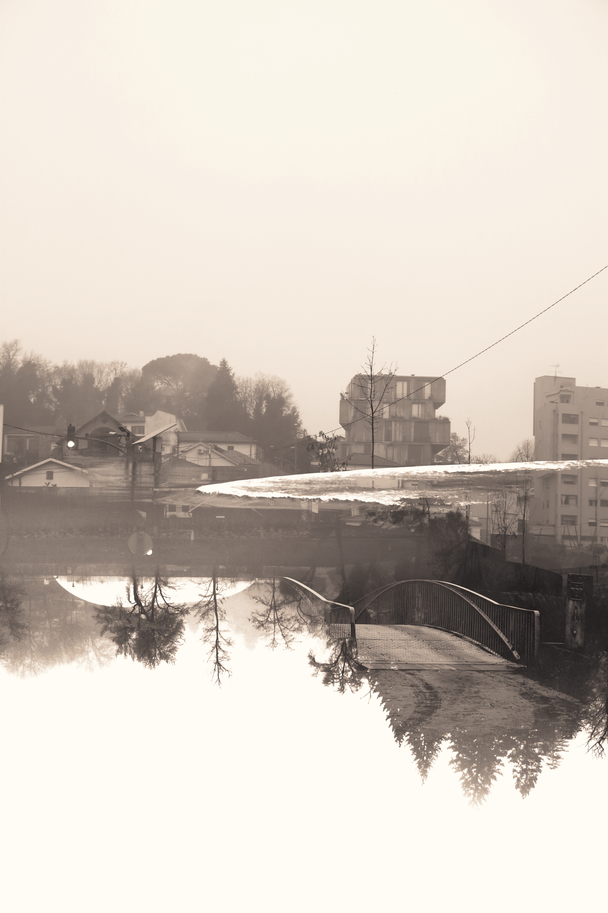

This photographic project was developed in a university context based on a single word-theme: reflection.
From this seemingly simple starting point, I delved into a visual and conceptual exploration of the multiple layers that the term can carry, from the literal mirror to the deepest introspection.
This work reflects a sensitive and subjective exploration of the relationship between myself and the city where I grew up, Amarante. The images, characterized by a melancholic and dreamlike tone, reinforce the idea of an "impossible city", a city that is not only a geographical space, but also a reflection of my emotions and memories. This perspective gives the work a personal and enigmatic dimension, where reality and subjectivity come together.

